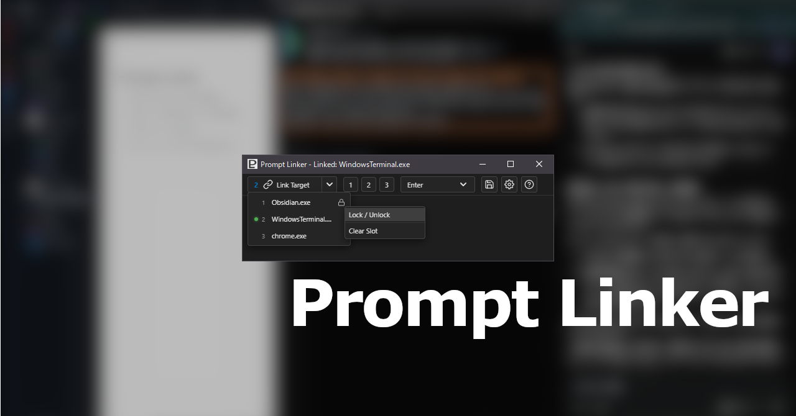
Prompt Linker マニュアル
📘 アプリ概要
「Prompt Linker」は入力したテキストをターゲットとなるアプリへ貼り付けるシンプルな
Windows専用デスクトップアプリです。
各セクションへのジャンプは左のサイドパネルの🚀 セクションナビをご活用ください。 先にダウンロードを済ませたい方は📥 ダウンロード・インストール方法 からアクセスしてください。
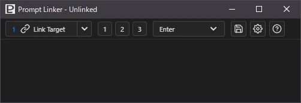
📌 主な特徴
-
リンクスロット
リンクするターゲットアプリを 最大3つまでのスロットに記憶し、メニューや「ホットキー」※ でターゲットアプリを切り替えることができます。 -
リサイズ可能範囲
全画面表示～最小500 x 170(px)まで自由にリサイズできます。 -
ターゲットアクション
ターゲットアプリへテキストを貼り付けた後にターゲットアプリで行うアクション (エンターキーを押すなど)を選択できます。 -
プリセット機能
ウィンドウサイズや位置、ターゲットアクションなどをプリセットとして最大3つまで保存し、 ボタンやホットキーで呼び出すことができます。 -
ホットキー充実
殆どの操作をキーボード、マウスのいずれからでも行えます。
(一部例外あり) -
最小化オプション
オプションとしてテキスト貼り付け後に本アプリを自動的に 最小化(タスクバーに格納)することができます。 -
テキスト保存機能
テキスト入力欄のテキストをユーザーがあらかじめ指定した任意のディレクトリへ プレーンテキスト(.txt)もしくは マークダウン(.md)ファイルとして保存できます。
❗❗ 注意
本アプリはテキストの転送にクリップボードを使用します。
機密情報等の取り扱いには十分注意して下さい。
💡「ホットキー」は
「ショートカットキー」や「キーボードショートカット」とも呼ばれますが 本アプリでは「ホットキー」で統一します。
🎬 利用シーン
本アプリは主に以下のようなシーンで使用することを想定しています。
- webチャットベースのAIアプリ(ChatGPTなど)へのテキスト入力
- CLIツールのAIアプリ(Gemini CLIなど)へのテキスト入力
- IDE(VSCodeなど)でのAIチャット欄へのテキスト入力
その他テキスト貼り付けを受け付けるアプリケーションにも使用できます。
⚠️ 注意
但し、ターゲットアプリ内に複数のテキスト入力欄がある場合は(例:ブラウザのタブなど)
本アプリは個別に認識することができません。
ターゲット指定する際には入力したいテキスト入力欄をクリックして フォーカスしてください。
✨ 解決すること
AIチャットやCLIツールを使っていて以下のようなことが不便だと感じていたので、
これらの問題を解決したいという思いがありました。
-
テキスト入力欄が狭い
プロンプトなどマークダウン記法で構造化された文章を入力したり確認するには手狭で一覧性が低い。 -
エンターキーでの誤送信
変換確定や改行をしようと思ってエンターキーを押したら誤って文章の途中で送信してしまうことがある。 -
CLIツールでの日本語入力が不安定
変換確定するまでカーソルと離れた位置に文字が表示されることがあるため非常に見辛い。
CLIツールやターミナルの設定である程度改善できる場合もあるが不安定なことが多い。
場合によっては一部が画面外になることもある。
🐌 従来のアプローチ
上記のようなことを回避するために、メモ帳などのシンプルなテキストエディタを別に立ち上げて、 入力したテキストをターゲットアプリのテキスト入力欄へコピペする方法があると思います。
ですが、コピペする作業では
- テキストエディタでテキストを入力
- 範囲選択(通常は全選択なのでCtrl+A)
- コピー(Ctrl+CもしくはCtrl+X)
- ターゲットアプリをクリック(ターゲットアプリへフォーカス移動)
- 貼り付け(Ctrl+V)
- ターゲットアプリで送信ボタン(もしくはエンターキーなど)を押す
- テキストエディタをクリック(フォーカスをテキストエディタに戻す)
というサイクルになり、効率が悪いです。
🏎️ 本アプリを使用した場合
🔁基本的なサイクル
- 本アプリでテキストを入力
- 「トリガーキー」※を押す
ユーザーが行うサイクルは基本的にこれだけです。
トリガーキーを押すと
- ターゲットアプリにテキストを貼り付け
- あらかじめ設定しておいたアクション(エンターキーを押すなど)をターゲットアプリで実行
- 本アプリのテキスト入力欄にフォーカスを戻す
といったフローが自動化されます。
💡 トリガーキーとは
本アプリではターゲットアプリへテキストを貼り付けるためのホットキーを 「トリガーキー」と呼称しています。
設定画面でCtrl+Enter か Shift+Enter のどちらかを選択できます。
また、トリガーキーを押す代わりに右クリックメニューからでも同様の操作が行えます。
⏬ 最小化オプションを使用した場合
最小化オプションをオンにするとターゲットアプリにテキストを貼り付けた後に 自動で本アプリのウィンドウを最小化(タスクバーに格納)します。
但し、その場合は自動でフォーカスは戻らないのでタスクバーのアイコンをクリックするか、
ホットキーを押してフォーカスを戻します。
(最小化された状態からフォーカスを戻すとウィンドウが元の位置へ戻ります。)
その場合サイクル的には
- 本アプリでテキストを入力
- トリガーキーを押す
- フォーカスを戻すホットキーを押す
というサイクルになるので基本サイクルよりは1サイクルにつき1手多くなります。
🔨 画面構成とツール
本アプリは「メイン画面」、「設定画面」、「ヘルプ画面」の３つの画面で構成されています。
基本的には「メイン画面」を使用し、必要がある時に「設定画面」、「ヘルプ画面」に切り替えます。
🖥️ メイン画面
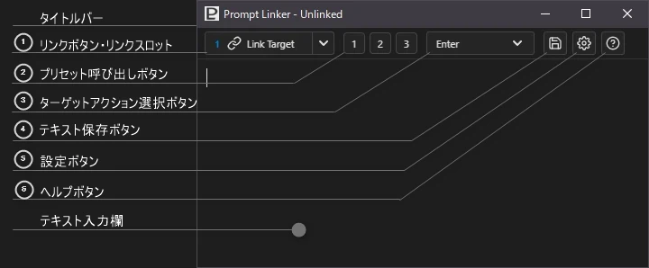
メイン画面の構成は上から
- タイトルバー
- ツールバー
- テキスト入力欄
の3つのエリアで構成されています。
📢 タイトルバー
- OS標準のタイトルバーです。全ての画面で共通です。
-
ターゲットアプリを指定していない状態では本アプリ名の後に
Unlinkedと表示されます。 -
ターゲットアプリを指定すると
Linked:の後にターゲットアプリの名前(実行ファイル名)が表示されます。
🧰 ツールバー
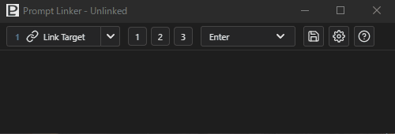
-
ツールバー上で右クリックをするとツールバーを隠すことができます。
(※ツールバー上であればどこでも構いません。) - ツールバーが隠れている状態でテキスト入力欄との境界線にマウスオーバーするとクリックできる状態 (境界線が青色)になり、クリックすると再びツールバーを表示することができます。
ツールバーには以下のようなボタン、ドロップダウンメニューが配置されています。
① 🔗 リンクボタン
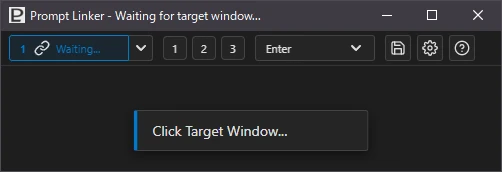
-
このボタンを押すと待機状態(ボタン内表示が
Waiting...)になるので ターゲットアプリのテキスト入力欄をクリックして指定します。 - 待機中にもう一度リンクボタンを押すと待機状態が解除されます。
- 待機開始から10秒以上経過するまでにターゲットアプリを指定しないとタイムアウトとなり、 待機状態が解除されます。
- 新しいターゲットアプリとリンクする度に最大3つまでのターゲットアプリが 「リンクスロット」へ記憶されます。
- 現在使用中のスロット番号が表示されます。
__ ▼ リンクスロット
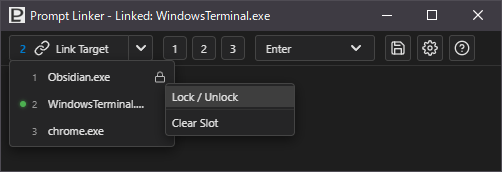
リンクスロット:-
∨マーク(
chevron)をクリックして現れるドロップダウンメニューから スロットを選択してターゲットアプリを切り替えることができます。 - 選択中のスロットはインジケーターが点灯します。
- 3つを超えてリンクすると新しいターゲットアプリは 現在使用中のスロット以外のスロットに上書きされます。
-
ターゲットアクションを変更した際には現在選択中のスロットに現在のターゲットアクションが
上書きで紐づけられます。
紐づけられたターゲットアクションはスロット選択時に復元されます。
- 対象スロットの上で右クリック→メニュー選択でスロットの 「ロック / アンロック」をすることができます。
- ロック状態のスロットにはロックアイコン🔒が表示されます。
- ロック状態のスロットは新しいターゲットアプリで上書きされません。
- 対象のスロットの上で右クリック→メニュー選択でスロットの 「クリア」(空にする)ができます。
- ロック状態のスロットは「クリア」することが出来ません。 「クリア」したい場合は先に対象スロットの 「アンロック」をして下さい。
⚠️ 注意
スロットにリンクしているアプリを終了した場合にはスロットは空になります。
(ロック中のスロットであっても保護されません。)
ターゲットアクションはロックされません。(ロックの対象外です。)
スロットの記憶は本アプリを終了すると失われます。
② 1️⃣2️⃣3️⃣ プリセット呼び出しボタン
- プリセットは設定画面で3つまで保存して呼び出すことができます。こちらは呼び出しボタンです。
-
プリセットは設定ファイル(
settings.json)に保存され、次回以降の起動時に読み込まれます。 -
プリセットに保存される情報は以下の通りです。
- ウィンドウの座標
- ウィンドウの幅
- ウィンドウの高さ
- ツールバーの隠蔽状態
- ターゲットアクション
💡 ターゲットアクションの復元
プリセットはウィンドウ状態に加えターゲットアクションも保存・復元します。
よく使う「いつもの」状態を素早く再現するためです。
プリセットによって再現されたターゲットアクションも通常のターゲットアクションの選択と同じく 現在選択中のスロットに上書きで紐づけられます。
③ 🎯 ターゲットアクション選択ボタン
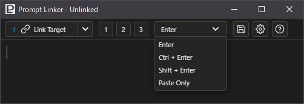
- ターゲットアプリにテキストを貼り付けた後にターゲットアプリで行うキー操作を指定します。
-
以下の選択肢からドロップダウンメニューで選択します。
- Enter
- Ctrl+Enter
- Shift+Enter
Paste Only(貼り付けのみでアクション無し)
- この選択状態は設定ファイルに保存され、次回起動時は最後に選択されていた状態を保持します。
④ 💾 テキスト保存ボタン
- テキスト入力欄のテキストを保存します。
- 保存先の指定は設定画面で行います。
- 保存先を指定しておけばボタン一発で保存できます。
-
保存形式はプレーンテキスト(
.txt)とマークダウン (.md)を選択できます。 -
ファイル名はタイムスタンプ(
YYYY-MM-DD-HHmmss)を元に自動生成されます。
⑤ ⚙️ 設定ボタン
- 設定画面へと切り替えます。
⑥ ❓ ヘルプボタン
- ヘルプ画面へと切り替えます
💬 テキスト入力欄
ターゲットアプリへ貼り付けるテキスト、もしくは保存するテキストを入力する所です。
テキストリオーダー（選択したテキストをドラッグして移動する操作）も使用できます。
-
🔥 【ホットキー】
テキストエディタで使える一般的なホットキーのうち以下の物が使用できます。- 切り取り: Ctrl+X
- コピー: Ctrl+C
- 貼り付け: Ctrl+V
- すべて選択: Ctrl+A
- 範囲選択: Shift+クリック
- 元に戻す: Ctrl+Z
- やり直す: Ctrl+Y
- 文字列検索: Ctrl+F
- 印刷: Ctrl+P
-
🖱️ 【右クリックメニュー】
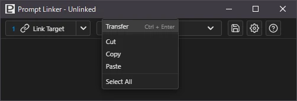
右クリックメニューを搭載しています。-
Transfer
入力したテキストをターゲットアプリへ貼り付けます
この選択肢は本アプリ独自機能です。以降はテキスト入力欄でよくある右クリックメニューです。 - 切り取り
- コピー
- 貼り付け
- すべて選択
-
Transfer
⚙️ 設定画面
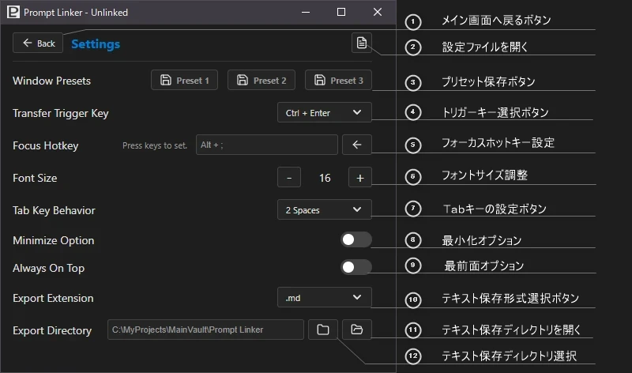
この設定画面で設定した内容は即時反映されます。
設定画面で設定した内容はsettings.jsonに保存されます。
① 🔙 メイン画面へ戻るボタン
- メイン画面に戻ります。
② 📃 設定ファイルを開く
-
settings.jsonファイルをOS既定のテキストエディタで開きます。
ウィンドウサイズを数値で指定したい場合などに設定ファイルを直接編集できます。
初回起動時にsettings.jsonが本アプリの実行ファイル (PromptLinker.exe)があるディレクトリに作成されます。
Program Files等書き込み権限が必要なディレクトリに実行ファイルがある場合にはsettings.jsonは以下のディレクトリに作成されます。
C:\Users\<UserName>\AppData\Local\PromptLinker(※安全のためGUIからは設定できないようにしています。)
"SubmitDelay": 400,この値はターゲットアプリへテキストを貼り付けてから ターゲットアクションを行うまでの遅延時間を設定しています。
この間隔が短すぎるとターゲットアクションが失敗する場合があるので ターゲットアクションが失敗する場合は値を大きくしてみて下さい。
あまり大きくしすぎるとテンポが悪くなるので注意してください。
最適な数値は環境により異なります。
デフォルトでは400ミリ秒で設定しています。
仮想デスクトップなどではもう少し大きな値に設定する必要がある可能性があります。
念のため万が一極端な数値に設定した場合でも安全な範囲に補正される仕様になっています。
設定変更後は再起動が必要です。
③ 💾💾💾 プリセット保存ボタン
- 現在のウィンドウ状態などをプリセットとして保存します。
- 最大で3つのプリセットを保存できます。
- 既に状態をセットしてあるプリセットの保存ボタンを押した場合には現在の状態で上書きされます。
④ 🏹 トリガーキー選択
- 本アプリからターゲットアプリへテキストを貼り付けるためのトリガーとなるキーを指定します。
- Ctrl+EnterかShift+Enterのどちらかを ドロップダウンメニューで選択します。
⑤ 🔭 フォーカスホットキー設定
- 本アプリをアクティブ(フォーカスが当たっている)状態にするホットキーを設定します。
- ここで設定したホットキーを押すことによって最小化からの復元ができます。
- 最小化されていない時は他のアプリにフォーカスがある状態から本アプリにフォーカスが移ります。
- デフォルトではCtrl+Alt+Fが設定されています。 右端の「←」アイコンをクリックするとデフォルト設定にリセットできます。
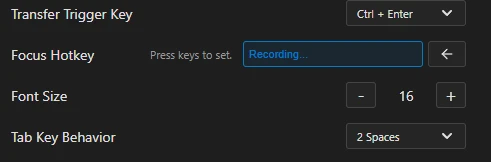
-
ホットキーが記載されているテキストボックスをクリックします。
Recording...と表示され待機状態になります。 - 装飾キー(複数可)と通常キーを押します。
- 待機状態中にDELキーを押すとキャンセルされ待機状態が解除されます。
- 待機開始から10秒以内にホットキーを確定しないとキャンセルされ待機状態が解除されます。
- Windowsシステムで使用されているホットキーや本アプリで既に使用されている ホットキーは登録できません。
- 装飾キーのみや通常キーのみでは登録できません。
- 装飾キーはCtrlShiftAltWIN で複数同時に指定できます。
❗❗ 注意
このホットキーは本アプリを立ち上げている状態で グローバルなホットキー※になります。
そのため、このホットキーを設定する時は他のホットキーと衝突しないように注意して下さい。
💡 グローバルホットキー（Global Hotkey）とは
アプリケーションがアクティブ（最前面）でなくても、OS全体で機能するホットキーのことです。
特定のソフトに依存せず、裏で起動しているツールやシステム機能を素早く呼び出せるため、 作業効率化に最適です
⑥ 📐 フォントサイズ調整
- メイン画面のテキスト入力欄のフォントサイズを指定します。
⑦ ➡ Tabキーの挙動選択
- メイン画面のテキスト入力欄でのTabキーの挙動を設定します。
-
選択できる挙動は以下の通りです。
- アプリ内フォーカスの移動
- Tabインデント
- 2スペースインデント
- 4スペースインデント
⑧ ⏬ 最小化オプション
- テキストを貼り付けた後に本アプリを最小化するかどうかを選択することができます。
- デフォルトではオフに設定されています。
⚠️ 注意
このオプションをオンにした場合には本アプリに自動で フォーカスが戻る機能は無効化されます。
フォーカスホットキー等を利用してください。
⑨ 🔝 最前面オプション
- 常に最前面に表示します。
⚠️ 注意
外部アプリとドラッグアンドドロップできたりとメリットもありますが、 本アプリの下にある表示を見逃したり一部の外部アプリとの連携がうまくいかない等の デメリットもあります。
⑩ ⌫ 転送時のテキスト自動クリア
- ターゲットアプリへテキストを転送した後に、本アプリのテキスト入力欄を 自動でクリアするかどうかを選択します。
- デフォルトではオン（クリアする）に設定されています。
- 連続して同じプロンプトを別のアプリに送りたい場合などはオフにします。
⑪ ⌫ 保存時のテキスト自動クリア
- テキストをファイルへ保存した後に、本アプリのテキスト入力欄を 自動でクリアするかどうかを選択します。
- デフォルトではオフ（クリアしない）に設定されています。
- 保存した後にそのまま転送作業を続けたい場合に便利です。
💡 テキスト入力欄のクリア
自動クリアをしない場合は手動クリアのホットキーAlt+Cが便利です。
勿論、全選択→DEL/BACKSPACEでもクリアできます。
⑫ 🔤 テキスト保存形式選択
- テキスト保存ボタンやホットキーで保存した時の拡張子を選択します。
⑬ 📂 テキスト保存ディレクトリを開く
- テキストを保存するディレクトリをエクスプローラで開きます。
⑭ 🗂️ テキスト保存ディレクトリ選択
- エクスプローラの参照ウィンドウを開いて指定します。
- 途中で変更することも可能です。
❗❗ 注意
書き込み権限が必要なディレクトリを指定した場合はメッセージが出て弾かれますので 別のディレクトリを指定してください
❓ ヘルプ画面
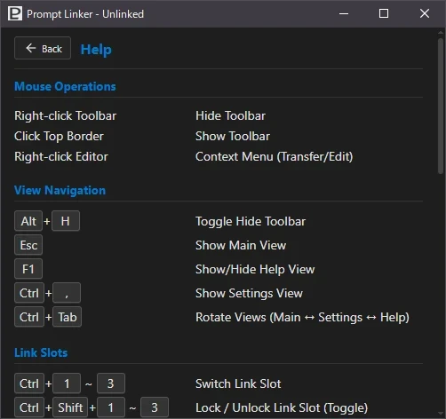
マウス操作での特殊な操作やホットキーを確認できます。
本アプリはほとんどの機能をホットキーでも操作できます。
🗺️ ホットキー一覧
# 画面操作
Alt + H : ツールバー表示/非表示
Esc : メイン画面を表示
F1 : ヘルプ画面表示/非表示
Ctrl + , : 設定画面を表示
Ctrl + Tab : 画面をローテーション(メイン↔設定↔ヘルプ)
# リンクスロット
Ctrl + 1〜3 : リンクスロット切替
Ctrl + Shift + 1〜3 : リンクスロットのロック/アンロック
Ctrl + Alt + 1〜3 : リンクスロットをクリア
# 転送・ターゲット操作
Alt + C : テキスト入力欄をクリア
Alt + L : ターゲットアプリのリンク/キャンセル
Ctrl/Shift + Enter : テキスト転送
Alt + Enter : アクション設定：Enter
Ctrl + Alt + Enter : アクション設定：Ctrl+Enter
Shift + Alt + Enter : アクション設定：Shift+Enter
Alt + P : アクション設定：貼り付けのみ
Alt + K : トリガーキー切替(Ctrl+Enter/Shift+Enter)
Alt + T : Tabキー動作切替
# プリセット
Alt + 1〜3 : プリセット呼び出し
Shift + Alt + 1〜3 : プリセット保存
# 設定・エクスポート
Ctrl + S : テキスト入力欄のテキストを保存
Alt + J : 設定ファイル(settings.json)を開く
Alt + R : フォーカスホットキーを初期化
Alt + A : 最前面オプションの切替
Alt + E : テキスト保存時の拡張子切替(.txt/.md)
Alt + M : 最小化オプション切替
Shift + Alt + T : 転送時のテキスト自動クリア切替
Shift + Alt + S : 保存時のテキスト自動クリア切替
Alt + - / = : フォントサイズ変更
Alt + B : テキスト保存ディレクトリを参照
Alt + O : テキスト保存ディレクトリを開く📡 外部アプリとの連携
本アプリは入力したテキストをターゲットアプリに貼り付けるという性質上、
必然的にクリップボードを経由します。
よって、貼り付けたテキストはクリップボードの履歴に残ります。
この性質を利用した外部アプリとの連携例を紹介します。
📋 Windows標準のクリップボード履歴機能
直近で貼り付けた内容を素早く確認したり復元したりする用途には
Windows標準のクリップボードの履歴機能を活用すると便利です。
標準機能なので何もインストールしなくてもWIN+Vで起動できます。
本アプリの「最前面オプション」をオンにしていても問題ありません。
✨ 高機能クリップボード履歴管理ソフトClibor
より高機能なクリップボード履歴フリーソフトのCliborが非常に便利でお薦めです。
履歴の保存件数も圧倒的に多く、検索機能や定型文機能もとても便利です。
また、テキストデータに特化しているので本アプリとも相性が良いです。
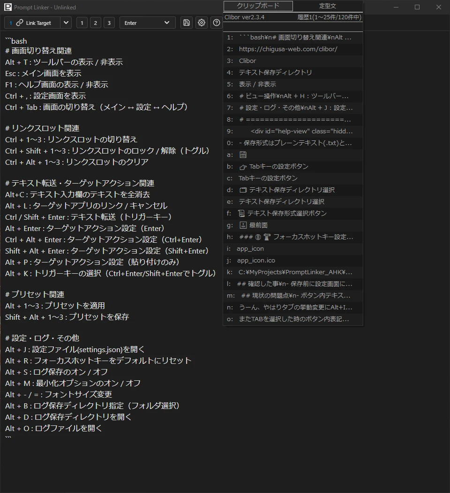
❗❗ 注意
本アプリの「最前面オプション」(Always On Top) をオンにしているとフォーカスを受け取れずにCliborからの自動貼り付けに失敗します。
Cliborの自動貼り付け機能を使用する場合は本アプリの最前面オプションをオフにしてください。
⚛️ ObsidianのVaultへmdファイルとして保存する
本アプリのテキストの保存形式をマークダウンに設定し、保存場所をObsidianのVault内のフォルダに設定しておけば保存ボタン、 あるいはCtrl+S一発で即座にVault内にマークダウンファイルが作成されます。
ファイル名は日時から自動生成されるので、テキストエディタなどで保存する場合の
- ディレクトリ選択
- ファイル名を入力
- 拡張子を指定して保存
というフローよりも素早く保存が完了します。
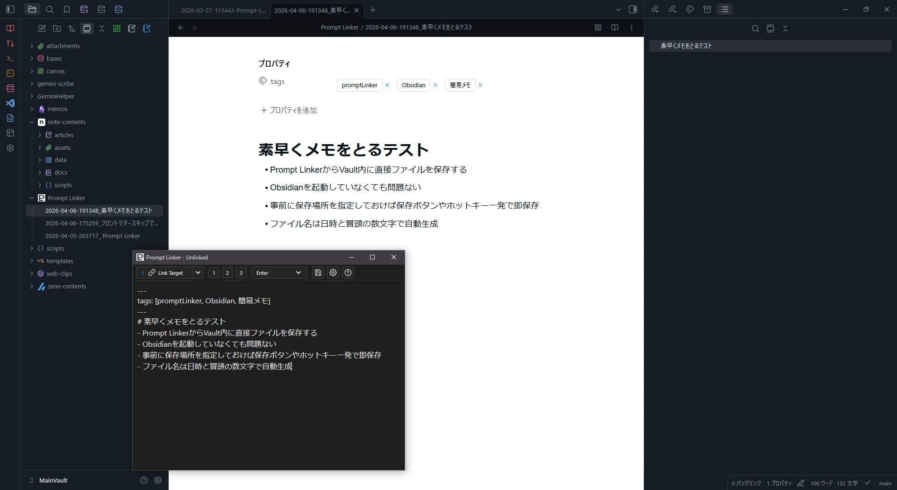
作業中に思いついたちょっとしたメモを残しておく程度のことであれば
わざわざObsidianを起動するまでもなく完了します。
また、クリップボード履歴と組み合わせて過去に使用したプロンプトをテンプレートや
資料などの用途にに残しておきたいと思った場合にも活用できるかもしれません。
📥 ダウンロード・インストール方法
こちらのダウンロードリンクからZipファイルをダウンロードしてください。
PromptLinker.zip をダウンロード
インストーラーはありません。
ダウンロードしたZipファイルを解凍してお好きなディレクトリに置いてください。
デスクトップにショートカットを作りたい場合やタスクバーにピン止めする場合は手動で行って下さい。
「Prompt Linker」はポータブルアプリとして動作します。
設定ファイルをexeファイルと同じ場所に保存するためユーザーフォルダ内
（例：C:\Users\<UserName>\Apps\PromptLinker）
などに配置することを推奨します。
Program Files など書き込み制限のあるフォルダに置いた場合、設定ファイルは自動的に
C:\Users\<UserName>\AppData\Local\PromptLinker に保存されます。
⚠️ 免責事項・ライセンス
免責事項
本アプリの使用によって生じた、いかなる損害（データの消失、破損、業務の停止、PC環境の不具合など） についても作者は一切の責任を負いません。自己責任でご利用ください。
ライセンス
本アプリのライセンスは MIT License に準拠します。
商用・非商用を問わず、誰でも無償で自由に使用、複製、変更、再配布することができます。
🔩 ソースコード
最新のソースコードおよび開発情報は GitHub にて公開しています。
https://github.com/2ndillness/PromptLinker_AHK